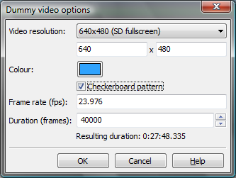

Aegisub isn't a video (or media) player, but it still supports loading and working with video in various ways. This page is a reference of how Aegisub's loading and handling of video works; for a gentler introduction on how to just get things to display properly you may want to read the Typesetting Tutorial or Visual Typesetting pages.
To load a video file, go to the Video menu and press Open video file. What video files you can open depends on your video provider. To use a dummy (mockup, blank) video, press Use dummy video.
Aegisub normally uses FFMS2 to open video, which supports opening nearly all common A/V formats, and many uncommon ones. For a full list of codecs supported, see FFmpeg or Libav documentation. Note that FFMS2 current has issues with interlaced H.264.
On Windows, Avisynth can be used instead of FFMS2. When opening via Avisynth, Aegisub will try several source functions to find the best choice:
Note that VFR is not supported by the Avisynth provider. In some cases loading external timecodes may work, but in practice it will often result in a broken mess.
Aegisub will look for Avisynth plugins in its ?data directory (generally the folder where aegisub32.exe is, on Windows). You can also put them directly in your Avisynth plugins folder to get them autoloaded.
Aegisub also supports providing a bogus video surface for you to render subtitles on without having any actual video loaded. The dummy video dialog box looks like this:

Aegisub does support playing back video, but it has been widely debated if it is a misfeature or not.
Think it through. Do you really want to play the video? (Hint: the answer is "no", you don't want to do that, at least not in Aegisub.) If you're trying to check if a subtitle matches up to something in the video, wouldn't it be easier to just step through the video frame-by-frame with the arrow keys? If you're proofwatching, it would be a better idea to watch it in a player your viewers might actually use.
To conclude: in real world situations, you will never need to play the video from inside Aegisub. The mantra is: Aegisub isn't a media player; if you want a media player use a media player. Nonetheless, Aegisub does make a reasonable effort to support reliable video playback and in practice it will usually work fine.
Note that audio has to be explicitly loaded for Aegisub to play it while playing video. If you find this bothersome, there is an option to automatically open audio whenever a video file is opened.
A brief, highly simplified explanation of what a keyframe is, for the people who missed Video 101:
Modern video codecs compress video by storing as little information as possible. Instead of storing all frames in full (like a large amount of JPG pictures), they take occasionally take a keyframe, which is stored fully, and for each frame after that until the next keyframe, they only store what changed in the picture since the last frame. Hence, to seek to a given frame the decoder needs to find the previous keyframe and decode all frames between that frame and the sought one, which means seeking to keyframes is faster than to other frames. Keyframes are interesting mostly for scene timing reasons, because they usually appear at scenechanges. The first frame in a scene is almost invariably a keyframe, but beware - far from every keyframe is a scenechange! Most encoders insert a keyframe at least once every 250-300 frames, even if there hasn't been a scenechange.
Aegisub uses keyframe data at several places in the program. They are drawn as black lines on the video seek bar, and (by default) also displayed in the audio waveform/spectrum analyzer.
When opening video through FFMS2, Aegisub supports reading keyframe data from most file formats, while the Avisynth provider only supports reading keyframes from AVI. If you are using a video format which keyframes can't be read from, you can still load keyframe data separately. Aegisub currently supports reading from several formats: its own keyframe file format (see specification below), XviD first-pass files, DivX first-pass files, and x264 first-pass files.
Even if keyframes can be read from the file it is sometimes useful to override them with external keyframes. Using XviD first-pass .stat files for audio timing is fairly popular, as XviD's keyframe choices correlate unusually well with scene changes.
Aegisub can also write the currently loaded keyframe data to a keyframes file, which can be useful to avoid passing video files around in certain situations (audio timing for example).
A keyframes file is a plain ASCII-encoded text file; both \n and \r\n is understood to mean a linebreak. Syntax example:
# keyframe format v1 fps 0 0 30 70 82 130 131
The first line is the format specification: the string
# keyframe format v1. The second line contains the FPS of the video used to
generate the keyframe data; however no programs (Aegisub included) actually
support this and so it is typically just 0. Finally, after the fps line
follows an arbitrary number of long integers (one per line), each representing
the frame number of a keyframe. The frame numbers are zero-indexed; i.e. the
first frame of the video is frame number 0.
Aegisub supports loading and working with variable framerate video. The how's and why's of VFR is far outside the scope of this manual (see for example the VFR thread on AnimeSuki or the Avisynth manual page for more information about VFR), but we will cover what you need to know about how Aegisub handles it.
Loading of Matroska timecode files (v1 and v2) is supported and useful if you have a VFRaC (Variable FrameRate assumed Constant; for example the frames of an VFR MKV stored in an AVI at a constant FPS, see the VFR thread linked above for details) video file but want the subs to sync to it. If you load a VFR file, Aegisub will automatically read the timecodes from it directly.
As long as you're not encoding with GDSMux, the encoding environment your subtitling filter is working in (i.e. Avisynth, VirtualDub or mencoder) will assume that the world is CFR, and hence the input file is VFRaC. This is obviously a problem since it messes up subtitle synchronization. Aegisub provides a way around this through the Framerate Transformation export filter, which takes the framerate of the VFRaC input file and the timecodes, and then changes every time code and override tag in the script so it can be hardsubbed on the VFRaC video and still sync up perfectly after timecodes are applied. To prepare a script for hardsubbing, make sure you have the timecodes loaded, then go to the File menu and press Export. Untick everything except the Transform Framerate filter. Choose the Variable output mode. It needs to know the FPS of the video you're going to hardsub the subtitles on; if you have video loaded Aegisub will assume that's it and insert it in the box for you.
Note: if you have a Matroska or other VFR file loaded, remember that the FPS value Aegisub reports might not be the same as the one of the video you are going to hardsub the subtitles on.
OR: How to get your subtitles to not look stretched
The following paragraphs assumes that you have a working knowledge of what anamorphic video is and how aspect ratios work. If you feel unsure, you may want to consult a gentle but fairly complete introduction.
An anamorphic image needs to be stretched to the proper aspect ratio before it is presented to the viewer. On a computer, this is usually done by the video renderer, and thereby lies a problem. Most subtitle renderers (including VSFilter, the current "standard" renderer) do the subtitle drawing on the image before it is stretched, and since the renderer is not aware of any aspect ratio issues, the subtitles will be stretched along with the image when the video is displayed to the viewer, and therefore they will look stretched. Aegisub does its subtitle rendering this way as well (since that way it will be WYSIWYG with most players); you can test how it looks by using the "Override aspect ratio" in the video menu.
Fortunately it's easy to compensate for the stretching, since you know by how much the image will be stretched (since you know its original dimensions and the display aspect ratio). You just calculate how many percent the image will be stretched in either the X or the Y direction, and then set the ScaleX or ScaleY parameter in the style (or use the \fscx or \fscy overrides) to the same amount but in the other direction.
Example: we have a 704x480 image that we know will be displayed as 16:9 (or 1.7777…:1). If we assume that the player will stretch the width but leave the height untouched, this means that the new width will be:
(16 / 9) * 480 = 853.333...
which in percent is:
853.333... / 704 = 1.212121...
i.e. 121%. Hence, to compensate for this horizontal (X-direction) stretch we set ScaleY in all our styles to 121% to stretch the subtitles by the same amount, and after rendering they now no longer look stretched.
OR we can do the stretching in the other direction, assuming that the player changes the height of the image instead. Assuming the same image: 704 / (16 / 9) = 396 which corresponds to: 396 / 480 = 0.825 or 82.5%, which means we can compensate for the vertical (Y) compression by setting ScaleX to 82.5%.
Both of the above methods give the subtitles the proper aspect ratio, but depending on how the player does the stretching, you may get subtle variations in subtitle size. Aegisub (and indeed most video players and renderers) always changes the image width and never the height, except if you pick the "custom" aspect ratio and specify a resolution. Note that if you use the Matroska container, you may specify the display resolution directly, but player support of this varies.
Note that some odd subtitle renderers (most notably Media Player Classic's builtin renderer) are actually a part of the video renderer and will do the subtitle rendering after anamorphic stretching, resulting in stretched subtitles and much annoyance. With MPlayer's libass renderer, you can actually specify whether subtitles should be drawn before or after stretching by using the -vf parameter to move the subtitle renderer in the filter chain.
For more information about anamorphic video and aspect ratios in general (a deeply obfuscated topic that appears simple at a glance) the following links may be of interest:
The following options are available from the video menu: